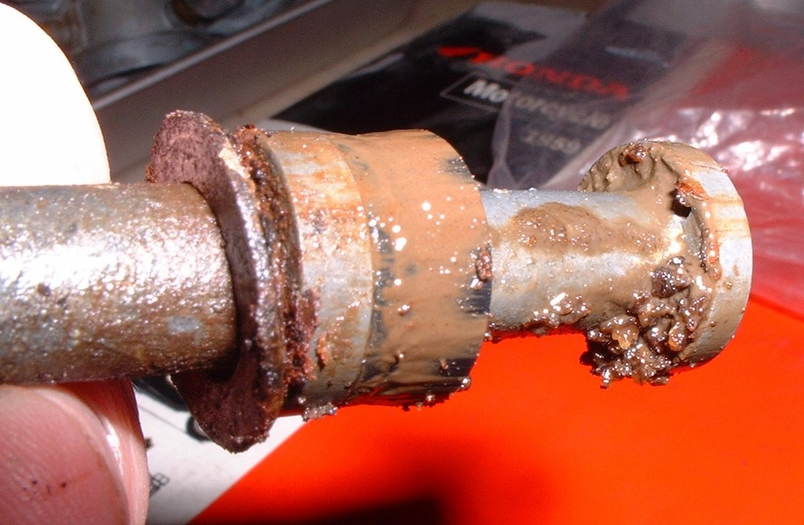
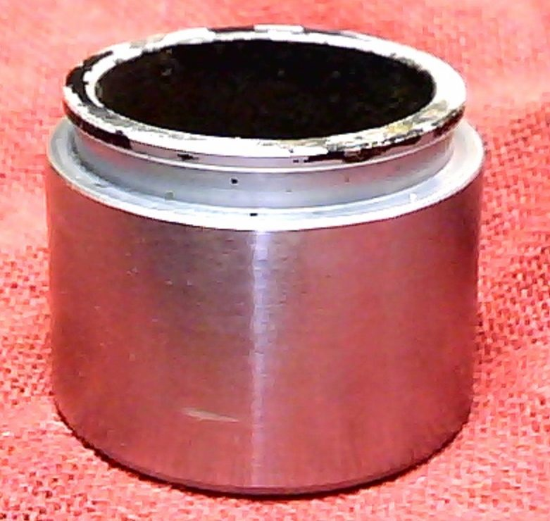

A caliper piston or slide pin does not move freely, so the pads stay pressed on the disc after you let go of the brake, or one pad hardly works. Signs: the wheel drags, the disc is very hot after a short ride, one pad wears fast, the bike pulls under braking, or a burning smell. The usual cause is dirt and corrosion on the pistons, often from old wet fluid or from riding through water and mud.
Is it safe to ride?
No. A sticking caliper overheats the fluid and pads, can fade the brake completely or lock the wheel.
Quick checks first
- Spin the wheel on the stand. Does it stop quickly?
- After a short ride, hold the back of your hand near the disc (do not touch). Very hot?
- Look at pad wear: one pad much thinner?
- Look at the fluid: dark?
- Signs of gum and corrosion behind a piston: the brake heats up with the lever untouched, or the wheel locks or drags. Water in the fluid is the usual cause.
- Push pistons back slowly with a clamp, loosening it a turn or two at a time so they move together. Pad the caliper so the paint is not damaged.
Diagnose it step by step
1Does the lever or pedal have free play and return fully?
- No: the problem is at the control, not the caliper. Go to Brake drags and the wheel does not spin freely.
- Yes: go to step 2.
2With a tube fitted, open the bleed nipple briefly. Does the wheel spin free?
- Yes: pressure was trapped upstream. Go to Check the brake master cylinder.
- No: the caliper is sticking. Go to step 3.
3Remove the pads. Do all pistons move out evenly when you pull the lever gently (wood block in place), and push back smoothly?
- Yes, after cleaning: the job is done with Clean a brake caliper and free the pistons. Go to step 5.
- No: go to step 4.
4Is a piston seized, pitted, or is fluid leaking past its seal?
- Yes: Rebuild a brake caliper or replace the caliper. Workshop.
- No, but a slide pin is rusted or its boot torn: clean or replace the pin and boot, grease with the specified grease.
5Are the pads soaked in fluid, glazed, or worn unevenly?
- Yes: Replace disc brake pads.
- No: refit them the same way.
6Is the fluid dark?
- Yes: Replace brake fluid and bleed the brakes. Old wet fluid corrodes pistons from inside and the problem will return.
- No: ride a short distance, then check the wheel spins freely and the disc is only warm.
What happens if you keep riding: the pad wears through, the disc overheats and warps, the fluid boils and you can lose the brake.
Causes, most likely first
| Cause | How to confirm | Fix |
|---|---|---|
| Dirty or corroded pistons | Pistons move unevenly; dirt on exposed part | Clean a brake caliper and free the pistons |
| Seized slide pins | Caliper does not slide; torn boot | Clean or replace pins and boots |
| Pitted piston or damaged seal | Pitting; fluid at piston | Rebuild a brake caliper |
| Old fluid causing corrosion | Dark fluid | Replace brake fluid and bleed the brakes |
| Master cylinder not releasing | Bleed nipple test frees wheel | Check the brake master cylinder |